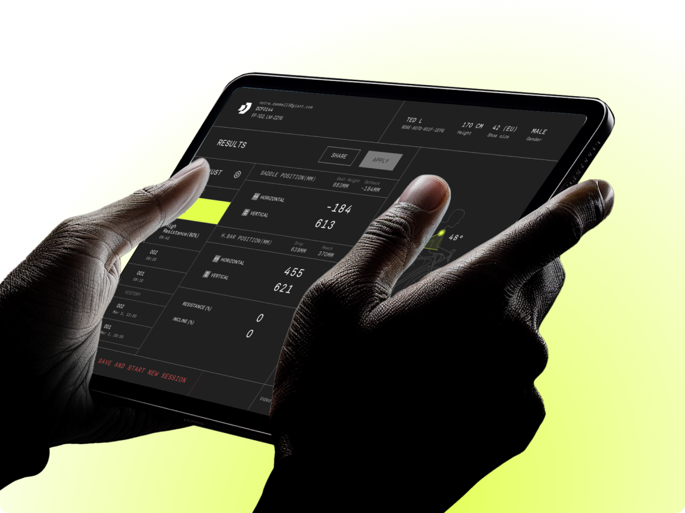
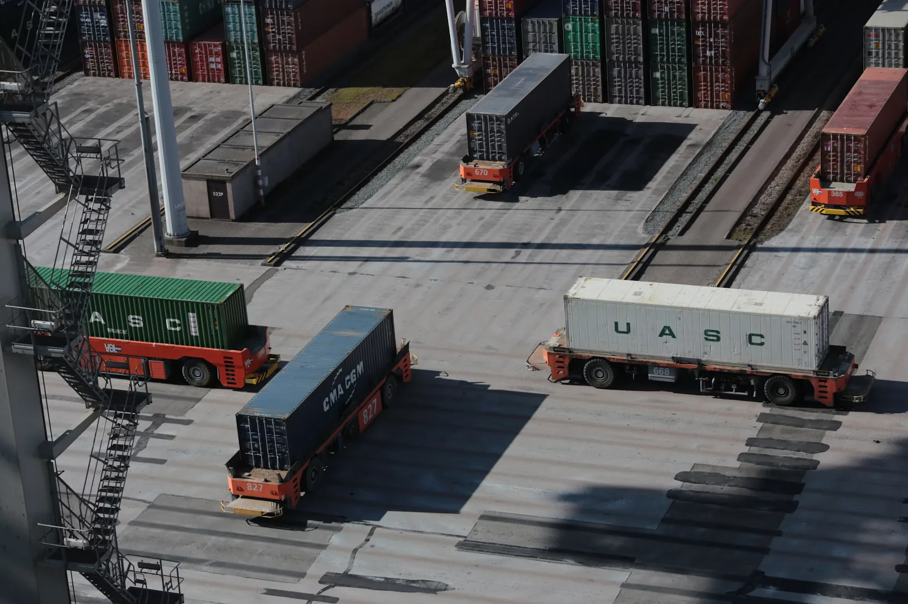
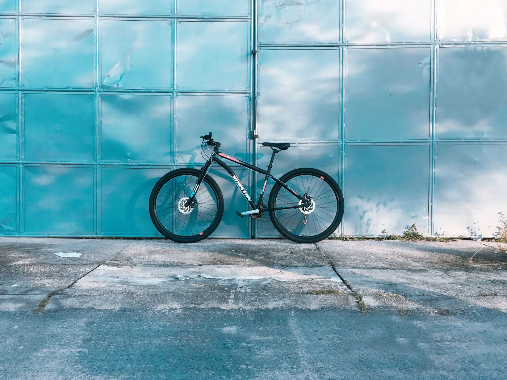

27 years98% on-time50+ shipped 🌍
Whether you need an AI platform 🧠
or an app that ships 🚀
Let's take it from idea to production
Six ways we can help
End-to-end with one team in Taipei: strategy, design, build and run.
AI Agent Development
Mobile & Web Apps
RPA & ML Services
Cloud Services
UI / UX Design
AR / VR Experiences
Work that speaks for itself
Real products, really shipped. A few of our favorites.

Dynamic Cycling FitMachine-learning bike fitting that dials in every rider's perfect position. Fitness & HealthApp DataLakeA secure AWS data lake turning factory data into business intelligence. DataPlatform FLIRA mobile companion connecting FLIR's specialized sensors in one live view. Digital SensorsApp
eShippingAutomated shipment tracking with real-time status from global carriers. LogisticsWeb
Custom BikeA global customization platform for made-to-order bicycles, from paint styles to parts. CommerceWeb Account SystemOne consumer identity across services, with secure multi-login. Consumer Platform
Good coffee ☕
Hybrid work
Team outings 🌴
High freedom, high responsibility
The best work comes from people who own their craft, in the office or remote.